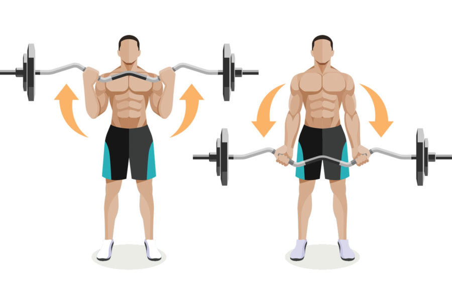

Программа тренировок в зале
Во второй день совмещаются мышцы верхней части корпуса — трицепс, плечи и трапеции, тогда как работающие в прошлую тренировку грудь и ноги получают восстановление. В третий день тренажерного зала необходимо качать спину и пресс — при работе мышц спины задействован и бицепс, однако с его последней тренировки прошло достаточное количество времени.
Плюсы 3 тренировок в неделю:
- развивает массу и объем верхней части тела
- подходит при тренинге на цикле
- большой акцент на пресс
- удобство графика (пн, ср, пт)
Плюсы 3 тренировок в неделю:
- снижен акцент на мышцы ног
- не подходит для эктоморфов или для начинающи
- подразумевает высокий уровень нагрузки
- может привести к перетрену
День 1: грудь, бицепс, ноги
Первый день программы тренировок является наиболее сложным. Он подразумевает работу над двумя крупнейшими мышечными группами тела — грудью и ногами. Отметим, что при возможности ходить в тренажерный зал 4 раза в неделю, лучше выделить отдельную тренировку на ноги.
1. Отжимания от пола
Упражнение для разминки и подготовки грудных мышц к тренировке. Варьируйте различные типы и ширину постановки рук, а также используйте подставку под ноги для усложнения. 2-3 подхода по 12-15 повторений
2. Сведения на грудь
Упражнение выполняется со средним рабочим весом, контролем за техникой и полным ощущением вовлечения грудных мышц в работу. Старайтесь как можно сильнее напрячь и свести грудь внутрь, выставляя руки вперед — но не фиксируя при этом локти. 2-3 подхода по 12-15 повторений
3. Жим штанги лежа
Базовое упражнение для мышц груди. Может выполняться как со штангой, так и в тренажере для жима. При выполнении на горизонтальной скамье не поднимайте ноги вверх. Опционально каждую неделю можно варьировать наклон скамьи. 3-4 подхода по 7-10 повторенийБазовое упражнение для мышц груди. Может выполняться как со штангой, так и в тренажере для жима. При выполнении на горизонтальной скамье не поднимайте ноги вверх. Опционально каждую неделю можно варьировать наклон скамьи. 3-4 подхода по 7-10 повторенийБазовое упражнение для мышц груди. Может выполняться как со штангой, так и в тренажере для жима. При выполнении на горизонтальной скамье не поднимайте ноги вверх. Опционально каждую неделю можно варьировать наклон скамьи. 3-4 подхода по 7-10 повторенийБазовое упражнение для мышц груди. Может выполняться как со штангой, так и в тренажере для жима. При выполнении на горизонтальной скамье не поднимайте ноги вверх. Опционально каждую неделю можно варьировать наклон скамьи. 3-4 подхода по 7-10 повторенийБазовое упражнение для мышц груди. Может выполняться как со штангой, так и в тренажере для жима. При выполнении на горизонтальной скамье не поднимайте ноги вверх. Опционально каждую неделю можно варьировать наклон скамьи. 3-4 подхода по 7-10 повторенийБазовое упражнение для мышц груди. Может выполняться как со штангой, так и в тренажере для жима. При выполнении на горизонтальной скамье не поднимайте ноги вверх. Опционально каждую неделю можно варьировать наклон скамьи. 3-4 подхода по 7-10 повторенийБазовое упражнение для мышц груди. Может выполняться как со штангой, так и в тренажере для жима. При выполнении на горизонтальной скамье не поднимайте ноги вверх. Опционально каждую неделю можно варьировать наклон скамьи. 3-4 подхода по 7-10 повторенийБазовое упражнение для мышц груди. Может выполняться как со штангой, так и в тренажере для жима. При выполнении на горизонтальной скамье не поднимайте ноги вверх. Опционально каждую неделю можно варьировать наклон скамьи. 3-4 подхода по 7-10 повторенийБазовое упражнение для мышц груди. Может выполняться как со штангой, так и в тренажере для жима. При выполнении на горизонтальной скамье не поднимайте ноги вверх. Опционально каждую неделю можно варьировать наклон скамьи. 3-4 подхода по 7-10 повторенийБазовое упражнение для мышц груди. Может выполняться как со штангой, так и в тренажере для жима. При выполнении на горизонтальной скамье не поднимайте ноги вверх. Опционально каждую неделю можно варьировать наклон скамьи. 3-4 подхода по 7-10 повторенийБазовое упражнение для мышц груди. Может выполняться как со штангой, так и в тренажере для жима. При выполнении на горизонтальной скамье не поднимайте ноги вверх. Опционально каждую неделю можно варьировать наклон скамьи. 3-4 подхода по 7-10 повторений
4. Подъемы штанги на бицепс

Ключевое упражнение для развития мышц бицепса. При выполнении используйте средний вес, позволяющий выполнить до 15 повторов. Не раскачивайтесь при подъеме штанги и держите локти в одной и той же точке. 2-3 подхода по 12-15 повторений.Ключевое упражнение для развития мышц бицепса. При выполнении используйте средний вес, позволяющий выполнить до 15 повторов. Не раскачивайтесь при подъеме штанги и держите локти в одной и той же точке. 2-3 подхода по 12-15 повторений.Ключевое упражнение для развития мышц бицепса. При выполнении используйте средний вес, позволяющий выполнить до 15 повторов. Не раскачивайтесь при подъеме штанги и держите локти в одной и той же точке. 2-3 подхода по 12-15 повторений.Ключевое упражнение для развития мышц бицепса. При выполнении используйте средний вес, позволяющий выполнить до 15 повторов. Не раскачивайтесь при подъеме штанги и держите локти в одной и той же точке. 2-3 подхода по 12-15 повторений.Ключевое упражнение для развития мышц бицепса. При выполнении используйте средний вес, позволяющий выполнить до 15 повторов. Не раскачивайтесь при подъеме штанги и держите локти в одной и той же точке. 2-3 подхода по 12-15 повторений.Ключевое упражнение для развития мышц бицепса. При выполнении используйте средний вес, позволяющий выполнить до 15 повторов. Не раскачивайтесь при подъеме штанги и держите локти в одной и той же точке. 2-3 подхода по 12-15 повторений.Ключевое упражнение для развития мышц бицепса. При выполнении используйте средний вес, позволяющий выполнить до 15 повторов. Не раскачивайтесь при подъеме штанги и держите локти в одной и той же точке. 2-3 подхода по 12-15 повторений.Ключевое упражнение для развития мышц бицепса. При выполнении используйте средний вес, позволяющий выполнить до 15 повторов. Не раскачивайтесь при подъеме штанги и держите локти в одной и той же точке. 2-3 подхода по 12-15 повторений.Ключевое упражнение для развития мышц бицепса. При выполнении используйте средний вес, позволяющий выполнить до 15 повторов. Не раскачивайтесь при подъеме штанги и держите локти в одной и той же точке. 2-3 подхода по 12-15 повторений.Ключевое упражнение для развития мышц бицепса. При выполнении используйте средний вес, позволяющий выполнить до 15 повторов. Не раскачивайтесь при подъеме штанги и держите локти в одной и той же точке. 2-3 подхода по 12-15 повторений.Ключевое упражнение для развития мышц бицепса. При выполнении используйте средний вес, позволяющий выполнить до 15 повторов. Не раскачивайтесь при подъеме штанги и держите локти в одной и той же точке. 2-3 подхода по 12-15 повторений.
5. Подъём на бицепс в скамье Смитта
При выполнении подъёмов в скамье Скотта, за счёт дополнительной фиксации локтя, повышается нагрузка на длинную головку бицепса — плюс, использование изогнутой EZ-штанги также поможет увеличить уровень вовлечения мышечных волокон. 2-3 подхода по 8-10 повторений.
И т.д ....
very very important link!!!